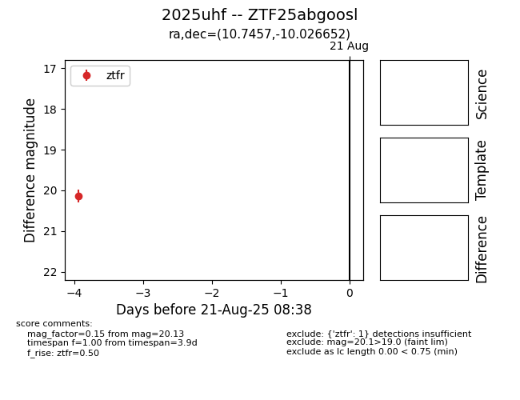

Target 2025uhf at 2025-08-21 11:20, see:
FINK: fink-portal.org/ZTF25abgoosl
Lasair: lasair-ztf.lsst.ac.uk/objects/ZTF25abgoosl
ALeRCE: alerce.online/object/ZTF25abgoosl
TNS: wis-tns.org/object/2025uhf
YSE: ziggy.ucolick.org/yse/transient_detail/2025uhf
alt names
ZTF25abgoosl (ztf,alerce)
2025uhf (tns,yse)
coordinates:
equatorial (ra, dec) = (10.7457,-10.02665)
galactic (l, b) = (115.8835,-72.78259)
photometry
last ztfr=20.13
1 ztfr detections
